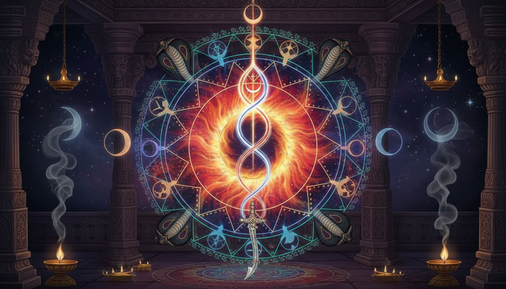

1. प्रस्तावना
भारतीय आध्यात्मिकता के अगाध सागर में देवी का प्रत्येक स्वरूप एक विशिष्ट ब्रह्मांडीय ऊर्जा का प्रतिनिधित्व करता है। इनमें 'मां छिन्नमस्ता' का स्वरूप सबसे रहस्यमयी और विस्मयकारी माना जाता है। वह स्वरूप, जिसमें देवी अपना ही कटा हुआ मस्तक हाथ में लिए हुए हैं, पहली दृष्टि में भय उत्पन्न कर सकता है, परंतु एक साधक के लिए यह सृजन और विनाश के उस परम विरोधाभास का प्रतीक है जहाँ मृत्यु ही जीवन के नवीन अर्थ का द्वार बनती है। छिन्नमस्ता वास्तव में 'अहंकार' के पूर्ण विसर्जन और उस 'अमनस्क' (Amansaka) स्थिति की परिचायक हैं, जहाँ साधक मानवीय भावनाओं और क्षुद्र पहचान से परे होकर परम चेतना में विलीन हो जाता है। यह लेख आपको देवी के इस गूढ़ स्वरूप, 'शक्ति पुराण' के लचीलेपन और राहु-केतु जैसे ज्योतिषीय कष्टों के निवारण के रहस्यों से परिचित कराएगा।

2. मां छिन्नमस्ता: आत्म-बलिदान और सर्वोच्च चेतना का प्रतीक
तंत्र शास्त्र में 'वज्र योगिणी' या 'प्रचण्ड चण्डिका' के नाम से विख्यात देवी छिन्नमस्ता दसों महाविद्याओं में छठे स्थान पर आती हैं। उनके स्वरूप का प्रत्येक पक्ष एक गहरा दार्शनिक संदेश देता है:
- नाम और स्वरूप: छिन्नमस्ता का अर्थ है 'कटे हुए सिर वाली'। उन्हें १६ वर्ष की एक प्रदीप्त किशोरी के रूप में वर्णित किया गया है। उनका 'दिगंबरी' (नग्न) स्वरूप शरीर के प्रति मोह, सांसारिक भ्रम और मिथ्या पहचान से पूर्ण मुक्ति का प्रतीक है।
- अहंकार का विनाश: उनके एक हाथ में अपना ही कटा हुआ सिर और दूसरे में खड्ग है। यह इस सत्य को दर्शाता है कि परम ज्ञान की प्राप्ति के लिए व्यक्ति को अपने 'अहंकार' की बलि देनी ही पड़ती है।
- तीन रक्त धाराएं: उनकी ग्रीवा से रक्त की तीन धाराएं प्रस्फुटित होती हैं, जो योग मार्ग की इड़ा, पिंगला और सुषुम्ना नाड़ियों का प्रतीक हैं। इनमें से दो धाराओं का पान उनकी सहचरी डाकिनी और वर्णिनी करती हैं। तीसरी मध्य धारा, जो हरे और पीले रंग की, गैसीय (Gaseous) प्रकृति की और अल्ट्रा-वायलेट (Ultra-violet) आभा वाली है, स्वयं देवी का कटा हुआ सिर पीता है। यह सूक्ष्म ऊर्जा पूरे ब्रह्मांड में व्याप्त होकर समस्त जीवधारियों को प्रभावित करती है।
- इंद्रियों पर विजय: देवी कामदेव और रति के ऊपर खड़ी मुद्रा में हैं। यह काम-वासना और इंद्रियों के ऊपर नियंत्रण प्राप्त कर चेतना को उर्ध्वगामी बनाने का संकेत है।
- मणिपुर चक्र: मां छिन्नमस्ता शरीर में 'मणिपुर चक्र' (नाभि चक्र) के जागरण का मुख्य आधार हैं। उनकी साधना से कुंडलिनी शक्ति अत्यंत वेग से ऊपर उठती है, जो अज्ञान के ग्रंथियों का भेदन करती है।
3. लोक परंपरा और देवी: छिन्नमस्ता से जोगणी माता तक
आध्यात्मिक ग्रंथों के साथ-साथ देवी का यह स्वरूप लोक परंपराओं में भी गहराई से रचा-बसा है। गुजरात की लोक संस्कृति में पूजित 'जोगणी माता' को मां छिन्नमस्ता का ही लोक-स्वरूप (Folk face) माना जाता है।
कठियावाड़ की एक प्रचलित लोक-कथा के अनुसार, जब 'रक्तवर्ण' नामक भयंकर राक्षस के आतंक और भीषण अकाल से प्रजा त्राहि-त्राहि कर उठी, तब देवी ने अपने भक्तों की रक्षा हेतु स्वयं का मस्तक काट लिया। उस रक्त की धाराओं ने उनकी सखियों को अपार शक्ति प्रदान की, जिससे उन्होंने राक्षस का वध किया और पुनः वर्षा हुई। इस प्रकार, जोगणी माता और छिन्नमस्ता दोनों ही विपत्ति के समय 'resilience' (लचीलापन) और आत्म-बलिदान के सर्वोच्च सिद्धांतों को दर्शाती हैं।
4. मां दुर्गा: जगत की रक्षा और आगामी अवतार
'देवी माहात्म्य' (अध्याय 11) में मां दुर्गा की स्तुति 'नारायणी' के रूप में की गई है। वे न केवल वर्तमान कष्टों को हरती हैं, बल्कि भविष्य के संकटों के लिए भी अवतार धारण करने का वचन देती हैं।
| अवतार का नाम | उद्देश्य / वध |
|---|---|
| रक्तदंतिका | वैप्रचित्त दानवों का भक्षण करना, जिससे देवी के दांत अनार के फूलों जैसे लाल हो जाएंगे। |
| शाकंभरी | १०० वर्षों के अकाल के दौरान अपने शरीर से उत्पन्न शाकों (वनस्पतियों) द्वारा जगत का पोषण करना। |
| दुर्गा | 'दुर्गम' नामक महा-असुर का संहार करना। |
| भीमदेवी | हिमालय पर्वत पर ऋषियों की रक्षा के लिए असुरों का विनाश करना। |
| भ्रामरी | 'अरुण' असुर के वध हेतु असंख्य भ्रमरों (bees) का रूप धारण कर उसका प्राण हरण करना। |
5. राहु और केतु दोष निवारण: ज्योतिषीय उपाय
वैदिक ज्योतिष में राहु और केतु 'छाया ग्रह' हैं। राहु जहाँ भ्रम और मानसिक अशांति देता है, वहीं केतु विरक्ति और अचानक हानि का कारण बनता है। देवी उपासना इन दोनों ग्रहों को संतुलित करने का अमोघ अस्त्र है।
राहु दोष के लिए: राहु का स्वरूप एक कटा हुआ सिर है, अतः 'छिन्नमस्ता' की पूजा राहु के नकारात्मक प्रभावों को शांत करने के लिए अनिवार्य है। दुर्गा सप्तशती के चतुर्थ और अष्टम अध्याय का पाठ अत्यंत प्रभावी है। 'निर्वाण मंत्र' का जप भी विशेष फलदायी है: मंत्र: ॐ ऐं ह्रीं क्लीं चामुण्डायै विच्चे अर्थ: यहाँ 'ऐं' सरस्वती (ज्ञान), 'ह्रीं' भुवनेश्वरी (सुरक्षा) और 'क्लीं' महाकाली का बीज मंत्र है।
विशेष टिप (Rahu Kalam): तमिलनाडु की क्षेत्रीय परंपरा के अनुसार, प्रतिदिन 'राहु काल' के दौरान देवी दुर्गा के समक्ष तेल का दीपक जलाकर की गई पूजा राहु के दोषों को त्वरित रूप से शांत करती है।
केतु दोष के लिए: केतु की शांति के लिए भगवान गणेश की पूजा के साथ-साथ देवी की उपासना श्रेष्ठ है। एक विशेष व्यावहारिक उपाय के रूप में 'आवारा कुत्तों को भोजन खिलाना' केतु के दुष्प्रभावों को कम करने में जादुई प्रभाव दिखाता है।
दैनिक साधना के चरण:
- संकल्प: जल लेकर अपनी बाधाओं की शांति का मानसिक संकल्प लें।
- दीपक और पुष्प: पूजा में तिल के तेल का दीपक जलाएं और मां को लाल पुष्प अर्पित करें।
- कवच पाठ: 'देवी कवच' का पाठ करें जो एक सुरक्षा तंत्र (Protective armor) की तरह कार्य करता है।
- मंत्र जप: राहु काल या ब्रह्म मुहूर्त में देवी के मंत्रों का १०८ बार जप करें।
6. आध्यात्मिक साधना के लाभ
मां की उपासना से मिलने वाले लाभ केवल भौतिक नहीं, बल्कि गहरे आध्यात्मिक हैं:
- मानसिक स्पष्टता: राहु जनित भ्रम और 'अनिश्चितता' के वातावरण से मुक्ति।
- अहंकार से मुक्ति: साधक अपनी झूठी पहचान से ऊपर उठकर 'अमनस्क' स्थिति प्राप्त करता है।
- निर्भयता: मृत्यु के कष्ट और किसी भी प्रकार के भय का निवारण होता है।
- कुंडलिनी जागरण: यह साधना कुंडलिनी को उर्ध्वगामी बनाकर चेतना का विस्तार करती है।
7. निष्कर्ष और मुख्य निष्कर्ष (Takeaways)
शक्ति की उपासना केवल संकटों से बचने का मार्ग नहीं है, बल्कि यह स्वयं के भीतर छिपे 'असुरों' (काम, क्रोध, लोभ, मोह) को परास्त करने की प्रक्रिया है। 'शक्ति पुराण' हमें सिखाता है कि जीवन की चुनौतियों में देवी की ऊर्जा हमें वह लचीलापन (resilience) प्रदान करती है जिससे हम हर बाधा को पार कर सकते हैं।
मुख्य निष्कर्ष:
- चेतना का उर्ध्वगमन: देवी का कटा हुआ सिर मृत्यु का सूचक नहीं, बल्कि अहंकार के विसर्जन और 'चेतना के उर्ध्वगामी' होने की प्रक्रिया है।
- ब्रह्मांडीय ऊर्जा: गर्दन से निकलने वाली अल्ट्रा-वायलेट और गैसीय रक्त धारा ब्रह्मांडीय जीवन शक्ति का संचार करती है।
- राहु-केतु समाधान: राहु के लिए 'राहु काल' की पूजा और केतु के लिए 'कुत्तों को भोजन' देना अत्यंत प्रभावी व्यावहारिक उपाय हैं।
- Resilience: छिन्नमस्ता और जोगणी माता के स्वरूप विपरीत परिस्थितियों में हार न मानने और आत्म-बलिदान द्वारा विजय प्राप्त करने की प्रेरणा देते हैं।
Sources
NotebookLM notebook: 58e10df9-3c1e-4192-8a5b-5ebb61bd305b
- Durga Saptashati for Rahu Problems: Practice Guide - AstroSight - AI Vedic Astrology
- Rahu and Durga connection : r/Nakshatras - Reddit
- How Durga Kavach Protects You From Negative Planetary Effects - The Times of India
- 5 Astrological Benefits of Chanting Durga Kavach | - The Times of India
- Devi Mahatmya (Durga Saptashati):700 Verses of Goddess Power
- Who Is Goddess Durga and What are Her Powers? - Rudraksha Ratna
- Planetary Deities (Graha Devatas) in Astrology - Vedic Rishi
- Navagrahas and their deities: Vedic remedies to enhance planetary influence
- Who are affected by Rahu-Ketu Gochara Phala? What Remedies? - Astropuja
- Rahu and Ketu Twin Planets in Hindu Culture: Origins, Eclipses & Astrology Meaning - Exotic India Art
- Devi Mahatmya - Insights from the Puranas - Amarpujo
- CHINNAMASTA: THE GODDESS WITHOUT A HEAD - The Indian Panorama
- Chhinnamasta Devi: The Goddess of Divine Contrast - Centre for Indic Studies
- The Goddess Who Cut Her Own Head: The Story of Mahavidya ...
- DivineFeminine – Page 3 - Whispers of the Divine
- Rahu and Magic - templeofhope.in
- Durga Saptashati: A glorious song to the Divine Mother - The Art of Living
- Devi Bhagavata Purana: The Goddess as Supreme Reality - Priyanka S Kaintura
- What does Goddess Durga's Weapons Symbolizes? Full guide to their Meaning
- Depicting Goddess Durga – Beyond the Surface : r/Shaktism - Reddit
- Significance of Iconography of 10-armed Durga - Cottage9
- The Hidden Symbolism Behind the Lion and Weapons in Goddess Durga Statues
- Goddess Durga Symbolic Weapons - Living Arts with Kathleen Karlsen
- The Strength and Serenity of Durga - Soma Yoga & Pilates
- The Leadership Secrets of Goddess Durga: A Story of Power, Strategy and Resilience | by Akshay Kamath | Medium
- All About Shrimad Devi Bhagavata (Durga) Purana - Jagatgururampalji.org
- Devi Mahatmya - Wikipedia
- Devi Bhagavata Purana - Wikipedia
- The Devi Bhagavata Purana - Mahavidya
- Review of the Book: 'Devi Purana'
- Ketu Mahadasha Effects and Remedies – Symptoms, Impacts and Solutions - MyRatna
- Ketu Upasana: Understanding Ketu in Astrology & Powerful Remedies
- Remedies to Fix Ketu: Balancing the Shadow Planet's Energy - The Times of India
- Ketu: The Dissolver of Illusion - Sanatana Dharma
- Understanding Rahu - Honest Astrologer
- Rahu - Wikipedia
- Lalita Sahasranama - Wikipedia
- Lalitha Sahasranama: Names & Meanings | PDF | Devi | Hindu Behaviour And Experience
- Lalitha Sahasranama names 561-570 – Dattavani
- Lalitha Sahasranamam - Hindupedia, the Hindu Encyclopedia
- Sri Lalitha Sahasranamam - 1000 Names of Lalitha Devi from Brahmanda Purana - TemplePurohit - Your Spiritual Destination | Bhakti, Shraddha Aur Ashirwad
- Meanings of Lalitha Sahasranamam
- Lalitha Sahasranama names 571-580 - Dattavani
- Shri Durgasaptshati Chapter 4 - YouTube Music
- Narayani Stuti | Durga Saptashati 11th Chapter | Chandi Path | Devi Mahatmyam - YouTube
- Chapter 11: Hymn to Narayani – The Devi Mahatmya : Digital ...
- Adhibhautika, adhidaivika, ādhyātmika - Hindupedia, the Hindu ...
- Chhinnamasta - Wikipedia
- Shakti Durga - Guided Meditations - Insight Timer
- The swag of the Devi – Mahishasur Mardini - धर्मो रक्षति रक्षितः! - WordPress.com
- The Story of Mahishāsurmardini. Durga Puja | Mythological origins of… | by Cobalt Blue Foundation | Medium
- What is the solution for Ketu?
- Śrīmad-Bhāgavatam 7.13.31 - Vedabase
- Category:Durga - Vaniquotes
- Ketu in 12 Houses of Horoscope in Lal Kitab | Effects and Remedies - Astroshastra
- The Story of Rahu and Ketu - Vedic Astrology
- Devi Prapannarti Hare (Shri Durga Saptashati - Chapter 11 (Hymn To Narayani)) – Song by Gobinda Gopal Mukherjee - Apple Music
- Lalita Sahasranamam with translation - Google Groups
- Maa Chinnamasta | The goddess who sacrificed her own head - YouTube